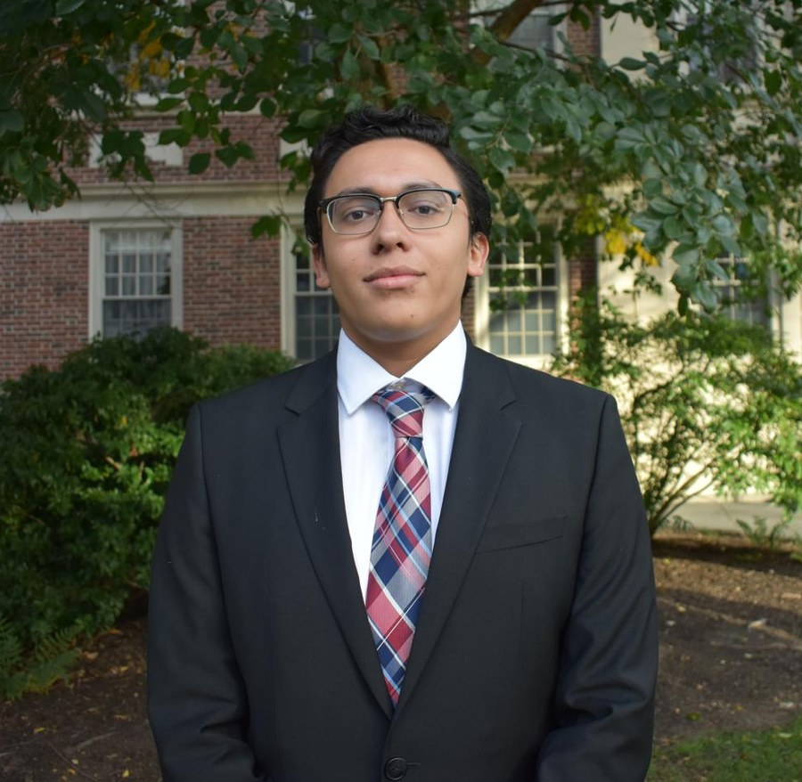
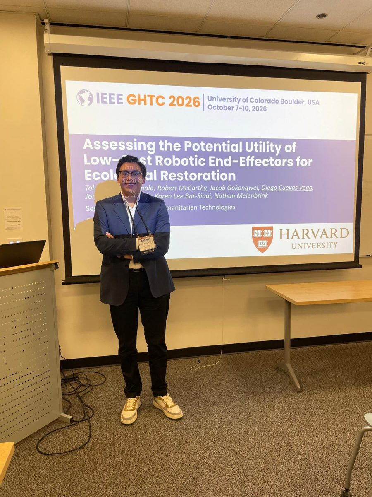

Electronics for robots that work the land.
I design embedded systems and mechatronics for ecological restoration and humanitarian technology, from firmware to field tests.
- FOCUS
- Embedded systems · Robotics
- STACK
- ROS2 · ESP32 · C/C++ · Python
- CAD
- SOLIDWORKS (CSWA) · Fusion 360
- PUBLISHED
- IEEE GHTC 2026

Projects
devices I've built, designed, and (always) re-designedExperience & Leadership
in the order it happenedAbout
a short letter
I grew up in Mexico City and came to Harvard to study electrical engineering, with a secondary field in economics. I like building things and solving problems that require applying theory to the real world, where the hardware has to survive mud, rain, tight enclosures and tight budgets.
Most of my work sits where electronics meet mechanisms. I write the firmware, design the parts in CAD, and machine or print them myself. Then I take them into the field to see what needs to be improved. I'm drawn to deep tech, sustainability and humanitarian technology, and to tools that work for the places that need them most.
Outside the lab I direct PRIMEX, a free mentorship program for Mexican students applying to US universities.
- Spanish
- English
- Frenchproficient
- Germanupper-intermediate
Honors
| 2026 | Jacob Wendell Scholarship Prize inviteeamong the top first-year academic records at Harvard College |
| 2025 | Gold Medal, International Economics Olympiadthe first Mexican gold medalist |
| 2024 | Gold and Bronze Medals, Mexican Mathematical Olympiadnational championships, two editions |